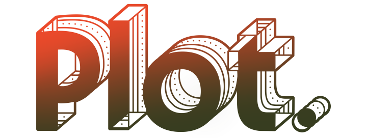
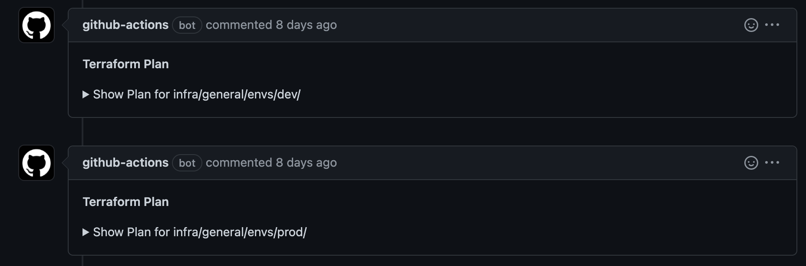
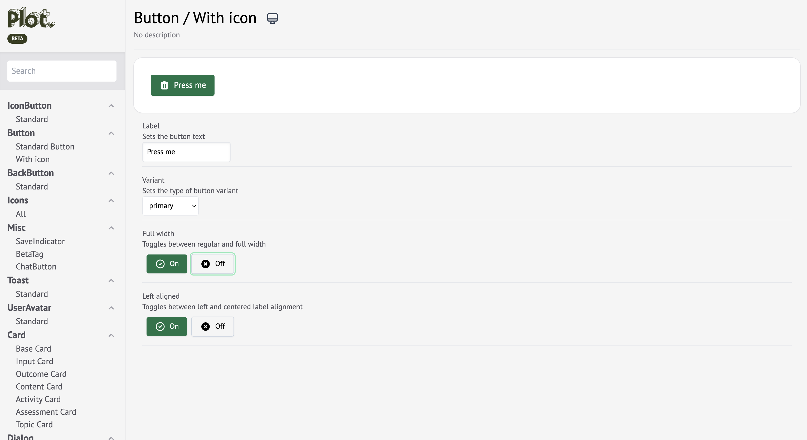
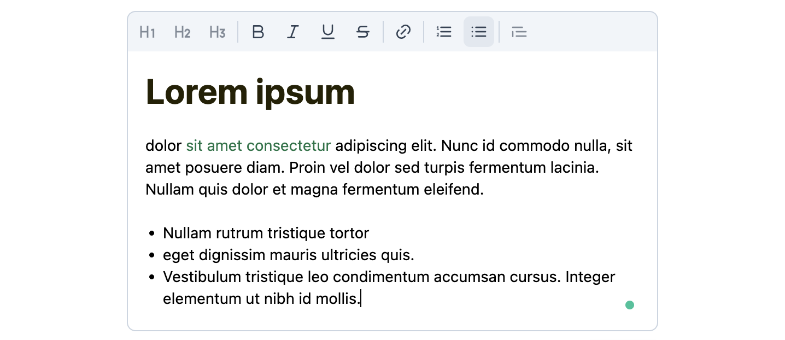
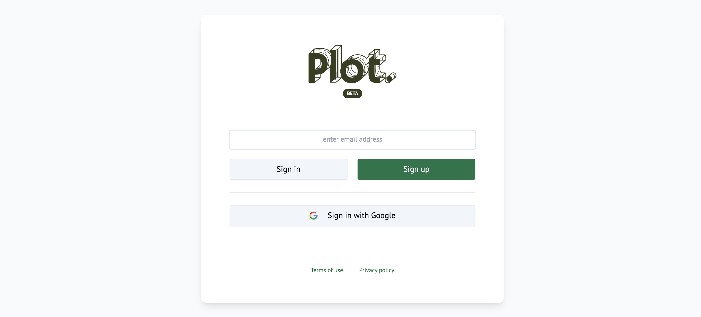
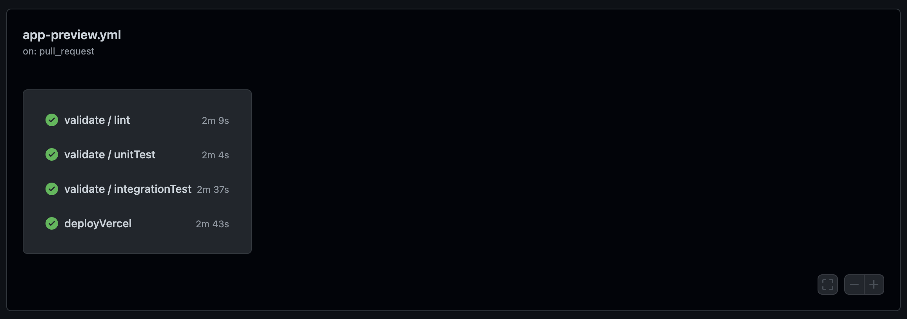
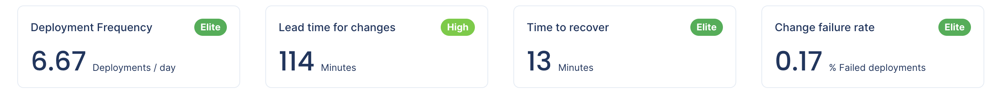

Behind the scenes of Plot’s Learning Design Platform
Apr 21, 2022 · 6 minute read · CommentsLeadershipDevelopment

At Plot, we’re building a Learning Design Platform that enables companies to rapidly scale the design of high-quality learning experiences by helping learning designers to make better design decisions faster.
It took our small team about three months to create a prototype of the platform. As with all early-stage startups, we did this in an environment of high uncertainty, making some technology choices a bit tricky. That’s where our guiding principles come in - our principles are what enable us to make the best decisions for our customers and our business even when faced with great uncertainty.
🙌 Our Principles
Right at the beginning, we set the following principles to help everyone on the team make technology decisions that supported our goals and ensured we were progressing in the same direction. We agreed that we would:
- Spend close to 100% of our time building the actual product
- Create short feedback loops to ensure quality and velocity
- Push complexity as much into the future as possible
- Fall into the Pit of Success.
- Prioritize User Experience (UX) and Developer Experience (DX)
⚙️ The Stack
Let’s dive into the stack that laid the foundations of our technology platform.
⌨️ Typescript
We write all our code in Typescript, with no Javascript allowed. We made this choice for a few reasons. They were:
- The team was already familiar with both languages, so there was no steep learning curve.
- The DX the tooling gave us was world-class.
- We caught a lot of silly type-related bugs early which saved time.
- Using the same language across the stack simplified the toolchain.
Additionally, the Javascript/Node.js/Typescript ecosystem is incredibly popular and Typescript is one of the most loved technologies, according to the Stack Overflow Developer survey 2021. So, finding answers to problems was a breeze!
🏗️ Infrastructure as Code
We use Terraform to declare our infrastructure components. That way, our environments are easily reproducible; we can spin them up in a matter of minutes. Additionally, all infrastructure changes go through the same peer-review and CI/CD pipeline as the rest of the system.

🚀 Next.js - The Full-stack Framework
Next.js is the full-stack framework for React applications. Having an opinionated framework that takes care of routing and API endpoints, which fits very well with Typescript and does server-side rendering, and has great DX allows us to focus on actually building the application. Not having to worry about configuring Webpack is liberating.
The entire team had plenty of experience with React, so adopting Next.js was a straightforward step.
Remix became generally available shortly after we started and it seems spectacular. However, we’re pretty happy with Next.js still. Next.js is battle-tested, mature, and has a very active community.
🚛 Storage
For our persistent data layer, we chose Prisma with PostgreSQL. Prisma is an outstanding tool that helped us move much faster. We enjoyed the hassle-free migrations, but we were blown away by the type safety and the autocomplete for writing queries.
We knew our data was going to be mostly relational. That is why we chose PostgreSQL over MongoDb. Thanks to its JSON support, PostgreSQL is versatile and it would adapt well to document-like records if ever needed. PostgreSQL is 99.9% likely to meet our needs!
Using Docker Compose, we ran a persistent database for local development and a non-persistent one for integration tests using Docker Compose.
🌍 Other App-side Technologies
We implemented our own design system using TailwindCSS and HeadlessUI. TailwindCSS gave us best-in-class DX with complete freedom to make our application look neat and consistent without being too similar to Material-UI. Once we became proficient with it, translating wireframes to components and screens came naturally. HeadlessUI was a “Pit of Success” for our app to be accessible.

React Query helps us manage our server-side state on the client. We get cache invalidation, retries, online/offline management, request cancellation, pagination, and more with no effort at all.
Plot users need to be able to collect documentation in a rich and structured way. So, we needed to provide a rich text editor, but creating a great text editing experience on the web that works well across devices is a brutal challenge. I speak from experience! That is precisely why we chose remirror, an open-source, off-the-shelf editor for React based on Prosemirror. With remirror, the team had the whole, bug-free, rich text editing experience working in our app in under a week.

Authentication is probably one of the most critical parts of any application. It is one of the first flows users experience and a typical attack vector. We could have chosen an authentication-as-a-service provider, like Auth0, but we decided to go with NextAuth.js. It was tremendously simple to set up and lets us heavily customize the experience. Plus, we’re able to keep all of the data.

☁️ Cloud Hosting
The core of the Plot LXD platform lives inside the Next.js application, which we deploy to Vercel. The automated preview and production deployments with zero configuration have been an incredible productivity boost; much better than setting up the infrastructure ourselves.
We use AWS (managed by Terraform) for the infrastructure pieces we need and which are not provided by Vercel: VPCs, RDS, SES, S3, etc.
📈 User Analytics
We knew we did not have the capacity to build and maintain a proprietary data pipeline. So, we chose Amplitude as our data analytics platform for a few reasons:
- Generous “free” tier
- Easy to integrate with a Next.js app
- Ease of use (it allows anyone in the company to obtain insights from available data)
🚢 CI/CD
All our code lives in a monorepo (via yarn workspaces) hosted in Github. We also leverage Github issues and actions CI/CD for a more straightforward setup.
A workflow kicks off when a PR is open that runs linting, unit/integration tests, and a preview deployment. Everything happens in parallel and takes less than 3 minutes.

Another workflow starts when a PR is merged to main. It deploys the application to production after all other checks have passed. Every change goes from main to production in under 5 minutes.
Our continuous delivery culture of fast & frequent deployments coupled with feature flags via LaunchDarkly has enabled us to excel at software delivery. We have been releasing over 6 times/day with a failure rate of <1%.

🚨 Observability
Software systems are bound to fail. We use the following tools to observe our application in production so we can understand how it behaves and where the problems are:
- Logflare for log aggregation
- Sentry for error tracking and performance monitoring
- Honeycomb for application tracing
🙌 Thanks for reading
I hope our stack inspires you to build great things in 2022 and that this post has provided some helpful guidance for developing a high-quality web application from the ground up!